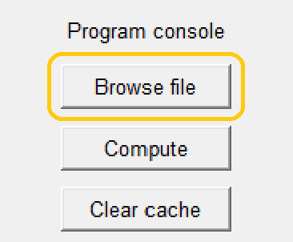
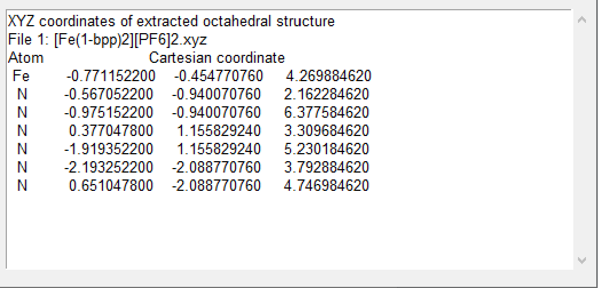
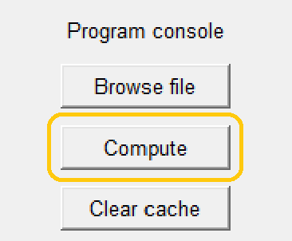
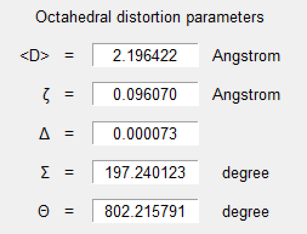

OctaDist

A tool for calculating distortion parameters in coordination complexes.
| back to homepage | manual |
Running the Test
This section shows how OctaDist can be used for computing the distortion parameters step by step. OctaDist can be used as a graphical user interface (GUI) and a command line interface (CLU).
Examples of coordinates files can be found at example-input.
Content
GUI
-
Click
Browse file, choose one or multiple input files, then clickOpen.
-
OctaDist will check file format and extract atomic coordinates, and show the data on a result box.

-
If yes, then click
Compute.
-
The computed parameters will be shown in output box.

-
To save the results, click
File, thenSave results.
CLI
To run OctaDist command line (with help):
octadist_cli
Suppose that the following is an example of input structure:
/home/nutt/test-structure.xyz
Compute distortion parameters:
octadist_cli -i /home/nutt/test-structure.xyz
# output
0.18506902312963258
0.0003179610975578898
89.06158122867365
286.13107524834516
You can ask OctaDist to show formatted output:
octadist_cli -i /home/nutt/test-structure.xyz -o
# output
Octahedral distortion parameters
--------------------------------
File: test-structure.xyz.xyz
Zeta = 0.18506902
Delta = 0.00031796
Sigma = 89.06158123
Theta = 286.13107525
OctaDist as a package
Example scripts are available at here.
-
Install OctaDist using
piporconda(see installing for details). -
Prepare lists of atomic labels and coordinates of octahedral structure, for example:
atom = ['Fe', 'O', 'O', 'N', 'N', 'N', 'N'] coord = [[2.298354000, 5.161785000, 7.971898000], [1.885657000, 4.804777000, 6.183726000], [1.747515000, 6.960963000, 7.932784000], [4.094380000, 5.807257000, 7.588689000], [0.539005000, 4.482809000, 8.460004000], [2.812425000, 3.266553000, 8.131637000], [2.886404000, 5.392925000, 9.848966000]]otherwise, you can use
extract_octamethod inmoleculemodule to extract the coordinates of octahedral structure of interest from input file. For example, suppose that the input file is atfull/path/of/input/file/Multiple-metals.xyzfrom octadist import molecule file = r"full/path/of/input/file/Multiple-metals.xyz" atom, coord = molecule.extract_octa(file) -
Import
calcmodule for computing the octahedral distortion parameters and get the computed parameters:from octadist import calc comp_result = calc.CalcDistortion(coord) zeta = comp_result.zeta delta = comp_result.delta sigma = comp_result.sigma theta = comp_result.theta -
Show value of computed distortion parameters:
All computed parameters ----------------------- Zeta = 0.22807256171728651 Delta = 0.0004762517834704151 Sigma = 47.926528379270124 Theta = 122.688972774546
Sample usage
Example 1
import octadist as oc
# The first atom must be metal center atom of octahedral structure.
# If not, please see example_2.py for how to handle this issue.
atom = ['Fe', 'O', 'O', 'N', 'N', 'N', 'N']
coord = [[2.298354000, 5.161785000, 7.971898000], # <- Metal atom
[1.885657000, 4.804777000, 6.183726000],
[1.747515000, 6.960963000, 7.932784000],
[4.094380000, 5.807257000, 7.588689000],
[0.539005000, 4.482809000, 8.460004000],
[2.812425000, 3.266553000, 8.131637000],
[2.886404000, 5.392925000, 9.848966000]]
dist = oc.CalcDistortion(coord)
zeta = dist.zeta # Zeta
delta = dist.delta # Delta
sigma = dist.sigma # Sigma
theta = dist.theta # Theta
print("\nAll computed parameters")
print("-----------------------")
print("Zeta =", zeta)
print("Delta =", delta)
print("Sigma =", sigma)
print("Theta =", theta)
# All computed parameters
# -----------------------
# Zeta = 0.22807256171728651
# Delta = 0.0004762517834704151
# Sigma = 47.926528379270124
# Theta = 122.688972774546
Example 2
import octadist as oc
atom = ['O', 'O', 'Fe', 'N', 'N', 'N', 'N']
coor = [[1.885657000, 4.804777000, 6.183726000],
[1.747515000, 6.960963000, 7.932784000],
[2.298354000, 5.161785000, 7.971898000], # <- Metal atom
[4.094380000, 5.807257000, 7.588689000],
[0.539005000, 4.482809000, 8.460004000],
[2.812425000, 3.266553000, 8.131637000],
[2.886404000, 5.392925000, 9.848966000]]
# If the first atom is not metal atom, you can rearrange the sequence
# of atom in list using coord.extract_octa method.
atom_octa, coord_octa = oc.molecule.extract_octa(atom, coor)
dist = oc.CalcDistortion(coord_octa)
zeta = dist.zeta # Zeta
delta = dist.delta # Delta
sigma = dist.sigma # Sigma
theta = dist.theta # Theta
print("\nAll computed parameters")
print("-----------------------")
print("Zeta =", zeta)
print("Delta =", delta)
print("Sigma =", sigma)
print("Theta =", theta)
# All computed parameters
# -----------------------
# Zeta = 0.22807256171728651
# Delta = 0.0004762517834704151
# Sigma = 47.926528379270124
# Theta = 122.688972774546
Example 3
import octadist as oc
# You can also import your input file, like this:
file = r"../example-input/Multiple-metals.xyz"
# Then use coord.extract_file to extract all atomic symbols and coordinates,
# and then use coord.extract_octa for taking the octahedral structure.
atom_full, coord_full = oc.molecule.extract_coord(file)
atom, coord = oc.molecule.extract_octa(atom_full, coord_full)
dist = oc.CalcDistortion(coord)
zeta = dist.zeta # Zeta
delta = dist.delta # Delta
sigma = dist.sigma # Sigma
theta = dist.theta # Theta
print("\nAll computed parameters")
print("-----------------------")
print("Zeta =", zeta)
print("Delta =", delta)
print("Sigma =", sigma)
print("Theta =", theta)
# All computed parameters
# -----------------------
# Zeta = 0.0030146365519487794
# Delta = 1.3695007180404868e-07
# Sigma = 147.3168033970211
# Theta = 520.6407679851042
Example 4
import octadist as oc
file = r"../example-input/Multiple-metals.xyz"
atom_full, coor_full = oc.molecule.extract_coord(file)
# If complex contains metal center more than one, you can specify the index metal
# whose octahedral structure will be computed.
# For example, this complex contains three metal atoms: Fe, Ru, and Rd.
# I add "2" as a second argument for choosing Ru as metal of interest.
atom, coord = oc.molecule.extract_octa(atom_full, coor_full, 2)
dist = oc.CalcDistortion(coord)
zeta = dist.zeta # Zeta
delta = dist.delta # Delta
sigma = dist.sigma # Sigma
theta = dist.theta # Theta
print("\nAll computed parameters")
print("-----------------------")
print("Zeta =", zeta)
print("Delta =", delta)
print("Sigma =", sigma)
print("Theta =", theta)
# All computed parameters
# -----------------------
# Zeta = 0.001616439510534251
# Delta = 3.5425830613072754e-08
# Sigma = 1.26579367508117
# Theta = 4.177042495798965
Example 5
import octadist as oc
file = r"../example-input/Multiple-metals.xyz"
atom_full, coord_full = oc.molecule.extract_coord(file)
# Graphical display for octahedral complex
my_plot = oc.draw.DrawComplex(atom=atom_full, coord=coord_full)
my_plot.add_atom()
my_plot.add_bond()
my_plot.add_legend()
my_plot.show_plot()
Example 6
import octadist as oc
file = r"../example-input/Multiple-metals.xyz"
atom_full, coord_full = oc.molecule.extract_coord(file)
# Display and automatically save image as .png file with user-specified name
my_plot = oc.draw.DrawComplex(atom=atom_full, coord=coord_full)
my_plot.add_atom()
my_plot.add_bond()
my_plot.add_legend()
my_plot.save_img()
my_plot.show_plot()
# Output image, Complex_saved_by_OctaDist.png, is stored at ../images directory
| back to homepage | manual |